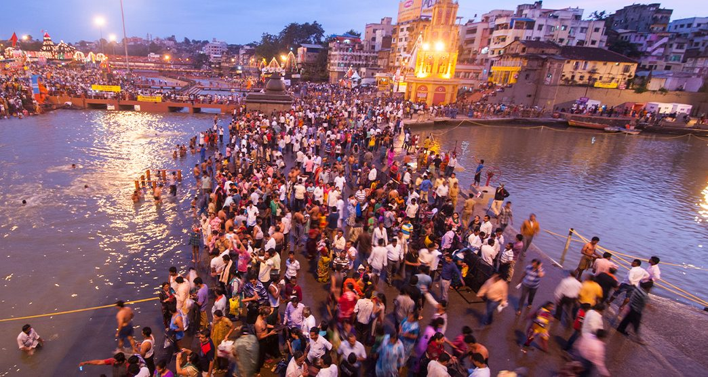
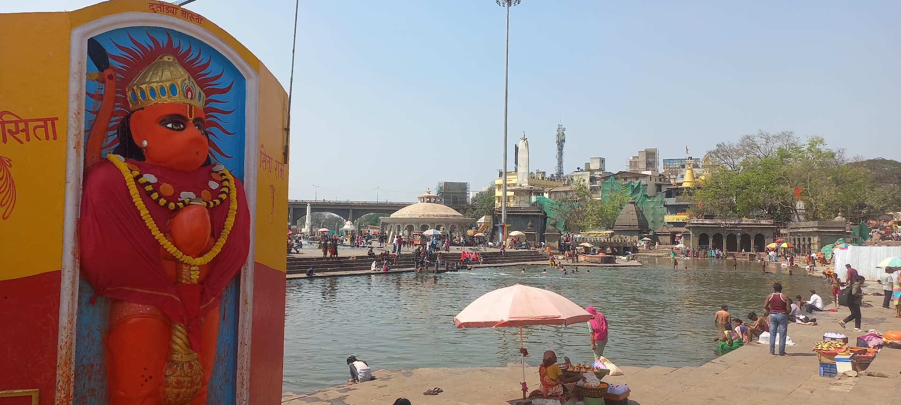
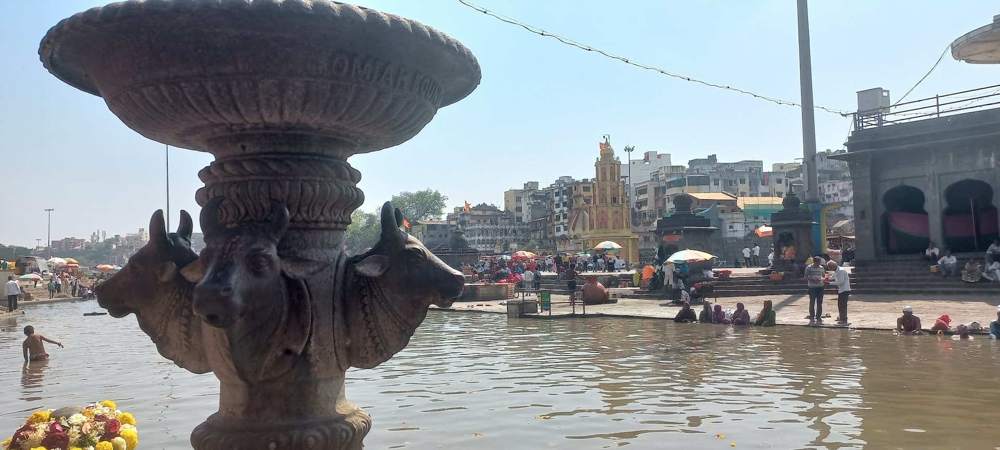
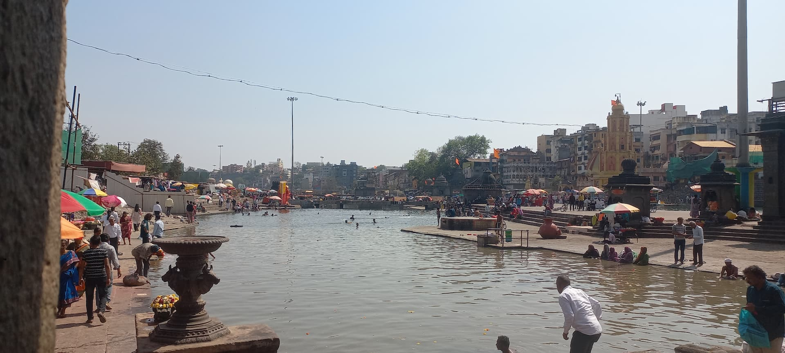

Nashik Kumbh Mela is one of the largest religious gatherings in India. Thousands of devotees visit Ramkund and Panchavati during the holy Snan dates. Plan your visit early and book accommodation in advance.



